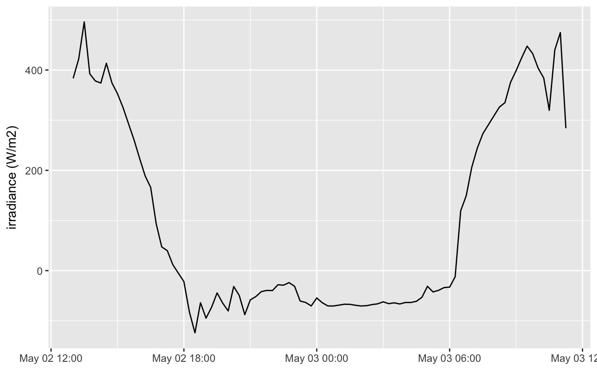
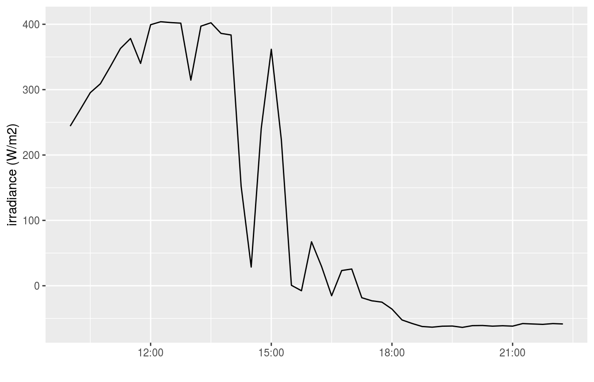
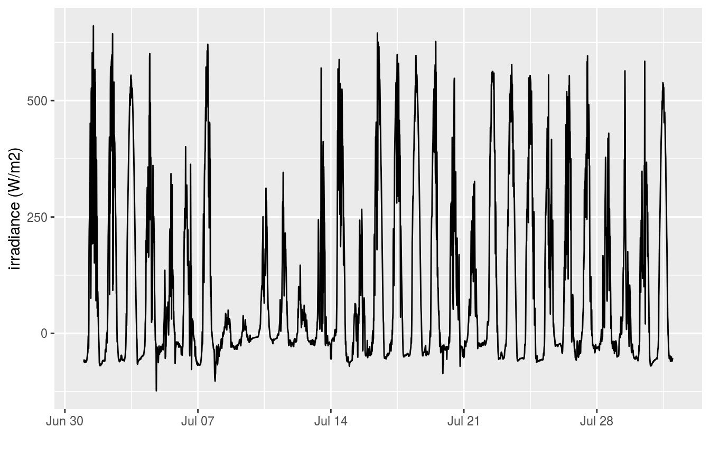
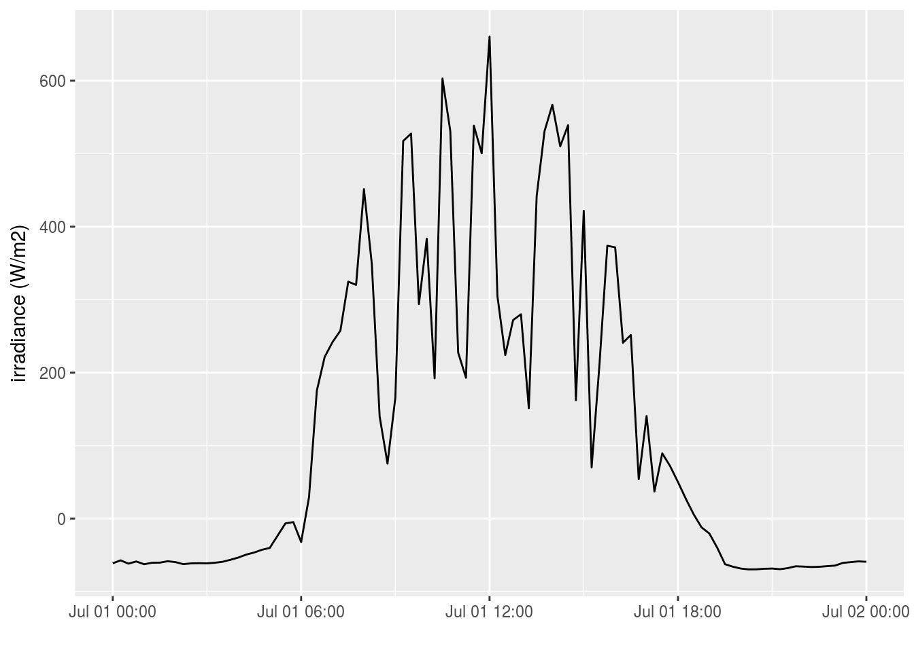

When downloading time series with the get_timeseries_tsid() method, the ts_id argument provides the link with the variable, location and frequency of the time series, but not the extent/period to download. The time period to download is defined by a combination of the arguments from, to and period. The usage is similar with the VMM documentation for the API itself. The main difference is that the wateRinfo package uses existing R functions to interpret the date strings given by the user before sending these to the API (as a formatted string according to %Y-%m-%d %H:%M:%S).
This vignette aims to briefly explain how to define the arguments.
In order to define a period, a start and end date is required. Defining all three will result in an error, but any combination of from/to, from/period and to/period is allowed. Moreover, if only period or from are defined, the Waterinfo.be API will automatically define to as the current time. Hence, defining the last x days/months/years/… can be achieved by only using the period option.
The package will both except valid date strings as well as valid date objects (POSIXct, POSIXt) as input for the from and to arguments. When using a string value, it can be defined on different resolutions:
According to the lubridate package, these orders are accepted: ymd_hms, ymd, ym, y. As a result, also “2017/01/01”, “2017 01 01” or “20170101” are valid date string inputs. Make sure the order of year-month-day is respected. For example, “01/01/2017”, “01-01-2017” and “01-2017” are NOT valid.
The period string provides a flexible way to extract a time period starting (in combination with from) or ending (in combination with to) at a given moment. Moreover, by using only the period as argument, it will cover all cases where one is interesed in the last x days/months/years/….
Some examples are:
P3D : period of three daysP2Y : period of 2 yearsPT6H : period of 6 hoursP2DT6H : period of 2 days and 6 hoursIn general, the period string should be provided as P#Y#M#DT#H#M#S, where P defines Period (always required!) and each # is an integer value expressing the number of…. The codes define a specific time interval: * Y - years * M - months * D - days * W - weeks * H - hours * M - minutes * S - seconds
T is required if codes about sub-day resolution (day, minutes, hours) is part of the period string. Furthermore, D and W are mutually exclusive.
More examples of valid period strings are:
P1DT12H : period of 1 day and 12 hoursP2WT12H : period of 2 weeks and 12 hoursP1Y6M3DT4H20M30S: period of 1 year, six months, 3 days, 4 hours, 20 minutes and 30 secondslibrary(wateRinfo)When interested in irradiance (15min frequency) data, the following stations provide time series:
get_stations("irradiance")## ts_id station_latitude station_longitude station_id station_no
## 1 78845042 51.27226 3.728299 12207 ME03_017
## 2 78879042 50.86149 3.411318 12209 ME05_019
## 3 78947042 51.20300 5.439589 12213 ME11_002
## 4 78913042 50.73795 5.141976 12211 ME09_012
## 5 78862042 51.24379 4.266912 12208 ME04_001
## 6 78896042 50.88663 4.094898 12210 ME07_006
## 7 78930042 51.16224 4.845708 12212 ME10_011
## station_name stationparameter_name parametertype_name
## 1 Boekhoute_ME Rad Rn
## 2 Waregem_ME Rad Rn
## 3 Overpelt_ME Rad Rn
## 4 Niel-bij-St.-Truiden_ME Rad Rn
## 5 Melsele_ME Rad Rn
## 6 Liedekerke_ME Rad Rn
## 7 Herentals_ME Rad Rn
## ts_unitsymbol dataprovider
## 1 W/m² VMM
## 2 W/m² VMM
## 3 W/m² VMM
## 4 W/m² VMM
## 5 W/m² VMM
## 6 W/m² VMM
## 7 W/m² VMMFocusing on the data of Herentals, the ts_id to use is 78930042. We have different options to define the period to get data from:
period only:irr_lastday <- get_timeseries_tsid("78930042", period = "P1D")
ggplot(irr_lastday, aes(Timestamp, Value)) +
geom_line() + xlab("") + ylab("irradiance (W/m2)")
period only:irr_lasthours <- get_timeseries_tsid("78930042", period = "PT12H30M")
ggplot(irr_lasthours, aes(Timestamp, Value)) +
geom_line() + xlab("") + ylab("irradiance (W/m2)")
from and to on month levelirr_2014 <- get_timeseries_tsid("78930042",
from = "2014-07-01",
to = "2014-08-01")
ggplot(irr_2014, aes(Timestamp, Value)) +
geom_line() + xlab("") + ylab("irradiance (W/m2)")
from and period
irr_2014day <- get_timeseries_tsid("78930042",
from = "2014-07-01",
period = "P1D")
ggplot(irr_2014day, aes(Timestamp, Value)) +
geom_line() + xlab("") + ylab("irradiance (W/m2)")